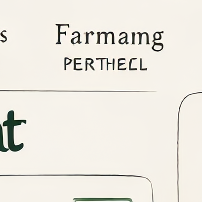

Memuat istilah farmasi...
GLOSARIUM
Istilah Farmasi
Glosarium istilah penting dalam dunia farmasi untuk memudahkan pemahaman.

Penting: Ini adalah materi edukasi umum, bukan diagnosis, resep, atau saran dosis pribadi. Selalu konsultasikan dengan dokter atau apoteker sebelum menggunakan obat.
✓ Ditinjau oleh Apoteker